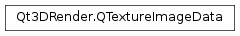

Qt3DRender.QTextureImageData¶
Synopsis¶
Functions¶
- def
cleanup() - def
data([layer=0[, face=0[, mipmapLevel=0]]]) - def
depth() - def
faces() - def
format() - def
height() - def
isCompressed() - def
layers() - def
mipLevels() - def
pixelFormat() - def
pixelType() - def
setData(data, blockSize[, isCompressed=false]) - def
setDepth(depth) - def
setFaces(faces) - def
setFormat(format) - def
setHeight(height) - def
setImage(arg__1) - def
setLayers(layers) - def
setMipLevels(mipLevels) - def
setPixelFormat(pixelFormat) - def
setPixelType(pixelType) - def
setTarget(target) - def
setWidth(width) - def
target() - def
width()
Detailed Description¶
QTextureImageDatastores data representing a texture.
-
class
PySide2.Qt3DRender.Qt3DRender.QTextureImageData¶ Constructs a new
Qt3DRender.QTextureImageData.
-
PySide2.Qt3DRender.Qt3DRender.QTextureImageData.cleanup()¶ Remove stored texture data and return the object to its initial state
-
PySide2.Qt3DRender.Qt3DRender.QTextureImageData.data([layer=0[, face=0[, mipmapLevel=0]]])¶ Parameters: - layer –
PySide2.QtCore.int - face –
PySide2.QtCore.int - mipmapLevel –
PySide2.QtCore.int
Return type: Returns the raw image data for the texture at layer
layer, facefaceand mipmapLevelmipmapLevelSee also
PySide2.Qt3DRender.Qt3DRender::QTextureImageData.setData()- layer –
-
PySide2.Qt3DRender.Qt3DRender.QTextureImageData.depth()¶ Return type: PySide2.QtCore.intReturns the depth of the stored texture
See also
PySide2.Qt3DRender.Qt3DRender::QTextureImageData.setDepth()
-
PySide2.Qt3DRender.Qt3DRender.QTextureImageData.faces()¶ Return type: PySide2.QtCore.intReturns the number of faces in the stored texture
See also
PySide2.Qt3DRender.Qt3DRender::QTextureImageData.setFaces()
-
PySide2.Qt3DRender.Qt3DRender.QTextureImageData.format()¶ Return type: PySide2.QtGui.QOpenGLTexture.TextureFormatReturns the format of the stored texture
See also
PySide2.Qt3DRender.Qt3DRender::QTextureImageData.setFormat()
-
PySide2.Qt3DRender.Qt3DRender.QTextureImageData.height()¶ Return type: PySide2.QtCore.intReturns the height of the stored texture
See also
PySide2.Qt3DRender.Qt3DRender::QTextureImageData.setHeight()
-
PySide2.Qt3DRender.Qt3DRender.QTextureImageData.isCompressed()¶ Return type: PySide2.QtCore.boolReturns true if the stored texture is in a compressed format
-
PySide2.Qt3DRender.Qt3DRender.QTextureImageData.layers()¶ Return type: PySide2.QtCore.intReturns the number of layers in the stored texture
See also
PySide2.Qt3DRender.Qt3DRender::QTextureImageData.setLayers()
-
PySide2.Qt3DRender.Qt3DRender.QTextureImageData.mipLevels()¶ Return type: PySide2.QtCore.intReturns the number of mip levels in the stored texture
See also
PySide2.Qt3DRender.Qt3DRender::QTextureImageData.setMipLevels()
-
PySide2.Qt3DRender.Qt3DRender.QTextureImageData.pixelFormat()¶ Return type: PySide2.QtGui.QOpenGLTexture.PixelFormatReturns the pixel format of the stored texture
See also
PySide2.Qt3DRender.Qt3DRender::QTextureImageData.setPixelFormat()
-
PySide2.Qt3DRender.Qt3DRender.QTextureImageData.pixelType()¶ Return type: PySide2.QtGui.QOpenGLTexture.PixelTypeReturns the pixel type of the stored texture
See also
PySide2.Qt3DRender.Qt3DRender::QTextureImageData.setPixelType()
-
PySide2.Qt3DRender.Qt3DRender.QTextureImageData.setData(data, blockSize[, isCompressed=false])¶ Parameters: - data –
PySide2.QtCore.QByteArray - blockSize –
PySide2.QtCore.int - isCompressed –
PySide2.QtCore.bool
Store the data
datawith blocksizeblockSizeand if the data to be stored is compressedisCompressedSee also
PySide2.Qt3DRender.Qt3DRender::QTextureImageData.data()- data –
-
PySide2.Qt3DRender.Qt3DRender.QTextureImageData.setDepth(depth)¶ Parameters: depth – PySide2.QtCore.intSets the depth to
depth. setDepthSee also
PySide2.Qt3DRender.Qt3DRender::QTextureImageData.depth()
-
PySide2.Qt3DRender.Qt3DRender.QTextureImageData.setFaces(faces)¶ Parameters: faces – PySide2.QtCore.intSets the faces to
faces. setFacesSee also
PySide2.Qt3DRender.Qt3DRender::QTextureImageData.faces()
-
PySide2.Qt3DRender.Qt3DRender.QTextureImageData.setFormat(format)¶ Parameters: format – PySide2.QtGui.QOpenGLTexture.TextureFormatSets the format to
format. **See also
PySide2.Qt3DRender.Qt3DRender::QTextureImageData.format()
-
PySide2.Qt3DRender.Qt3DRender.QTextureImageData.setHeight(height)¶ Parameters: height – PySide2.QtCore.intSets the height to
height. setHeightSee also
PySide2.Qt3DRender.Qt3DRender::QTextureImageData.height()
-
PySide2.Qt3DRender.Qt3DRender.QTextureImageData.setImage(arg__1)¶ Parameters: arg__1 – PySide2.QtGui.QImageCopies the image
imageas raw data within this object
-
PySide2.Qt3DRender.Qt3DRender.QTextureImageData.setLayers(layers)¶ Parameters: layers – PySide2.QtCore.intSets the layers to
layers. setLayersSee also
PySide2.Qt3DRender.Qt3DRender::QTextureImageData.layers()
-
PySide2.Qt3DRender.Qt3DRender.QTextureImageData.setMipLevels(mipLevels)¶ Parameters: mipLevels – PySide2.QtCore.intSets the mip levels to
mipLevels. setMipLevelsSee also
PySide2.Qt3DRender.Qt3DRender::QTextureImageData.mipLevels()
-
PySide2.Qt3DRender.Qt3DRender.QTextureImageData.setPixelFormat(pixelFormat)¶ Parameters: pixelFormat – PySide2.QtGui.QOpenGLTexture.PixelFormatSets the pixel format to
pixelFormat. setPixelFormatSee also
PySide2.Qt3DRender.Qt3DRender::QTextureImageData.pixelFormat()
-
PySide2.Qt3DRender.Qt3DRender.QTextureImageData.setPixelType(pixelType)¶ Parameters: pixelType – PySide2.QtGui.QOpenGLTexture.PixelTypeSets the pixel type to
pixelTypesetPixelTypeSee also
PySide2.Qt3DRender.Qt3DRender::QTextureImageData.pixelType()
-
PySide2.Qt3DRender.Qt3DRender.QTextureImageData.setTarget(target)¶ Parameters: target – PySide2.QtGui.QOpenGLTexture.TargetSets the target to
target. targetSee also
PySide2.Qt3DRender.Qt3DRender::QTextureImageData.target()
-
PySide2.Qt3DRender.Qt3DRender.QTextureImageData.setWidth(width)¶ Parameters: width – PySide2.QtCore.intSets the width to
width. setWidthSee also
PySide2.Qt3DRender.Qt3DRender::QTextureImageData.width()
-
PySide2.Qt3DRender.Qt3DRender.QTextureImageData.target()¶ Return type: PySide2.QtGui.QOpenGLTexture.TargetReturns the target for the stored texture
See also
PySide2.Qt3DRender.Qt3DRender::QTextureImageData.setTarget()
-
PySide2.Qt3DRender.Qt3DRender.QTextureImageData.width()¶ Return type: PySide2.QtCore.intReturns the width of the stored texture
See also
PySide2.Qt3DRender.Qt3DRender::QTextureImageData.setWidth()
© 2018 The Qt Company Ltd. Documentation contributions included herein are the copyrights of their respective owners. The documentation provided herein is licensed under the terms of the GNU Free Documentation License version 1.3 as published by the Free Software Foundation. Qt and respective logos are trademarks of The Qt Company Ltd. in Finland and/or other countries worldwide. All other trademarks are property of their respective owners.